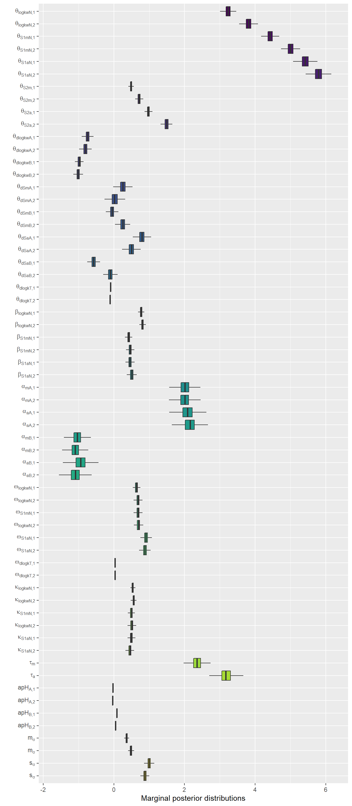
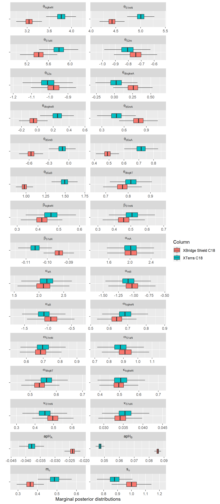
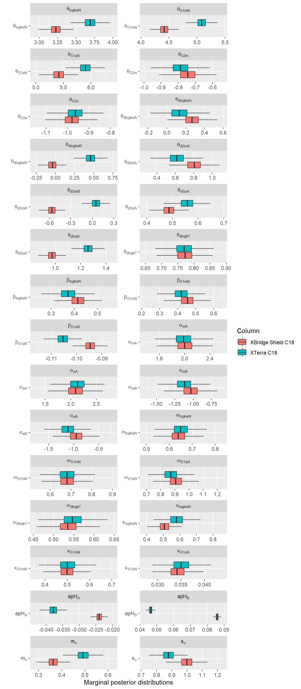
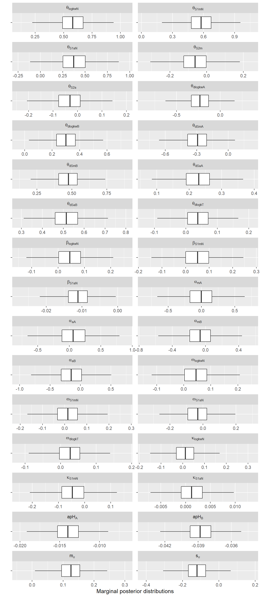

7 Comparison of population parameter values


variable <- rep(parameters_names,each=4000)
value <- pp_Com[120001:240000,2]-pp_Com[1:120000,2]
pp_Com_dif <- as.data.frame(cbind(variable,value))
pp_Com_dif[,1] <- ordered(pp_Com_dif[,1],parameters_names)
pp_Com_dif[,2] <- as.numeric(pp_Com_dif[,2])7.1 Distribution of differences in parameters between columns
ggplot(data = pp_Com_dif, aes(x=variable, y=value)) + geom_boxplot(aes(fill=variable),outlier.shape=NA)+ coord_flip()+
theme(legend.position = "none")+ scale_x_discrete(labels=lab_labeller())+
labs(y="Marginal posterior distributions",x="")
ggplot(data = pp_Com_dif, aes(x=variable, y=value)) + geom_boxplot(outlier.shape=NA)+ coord_flip()+
#theme(legend.position = "none")+
scale_x_discrete(labels=lab_labeller())+
labs(y="Marginal posterior distributions",x="")+facet_wrap(~variable, labeller=lab_labeller,scales = "free", nrow = 15)Warning: The labeller API has been updated. Labellers taking `variable` and
`value` arguments are now deprecated. See labellers documentation.